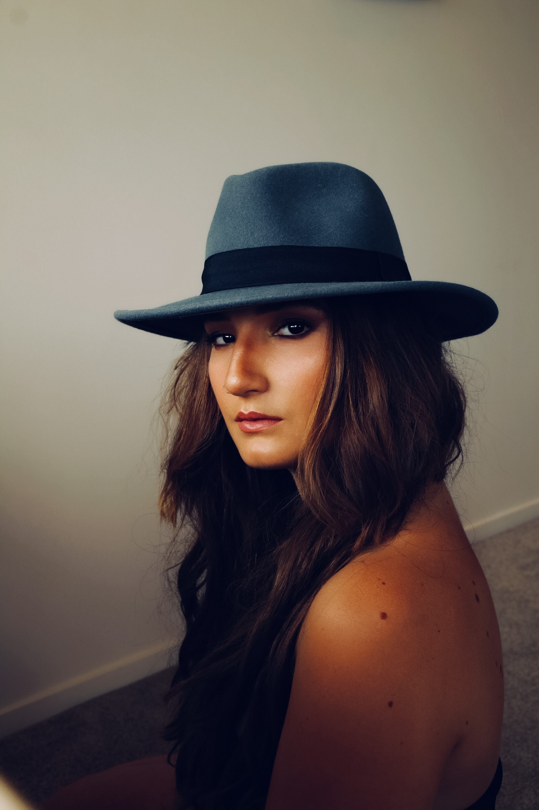

Hat Personality
The hat can represent authority and power. Because it covers the head, the hat contains thought; therefore, if it is changed, an opinion is changed. The covered head may show nobility, and different hats signify different orders within the social heirarchy. Removal of a hat, usually by men, upon entry into a building shows respect. Hats help you draw attention and make you stand out from the crowd. Wearing a hat will complete your look - it's a simple yet great accessory to make you look confident. Whether you prefer to wear it as a sporty accessory or a fashion statement, the hat will make you hold your head up high.
We all know a Hat Girl. Someone beautiful and effortless, with the face and attitude and personal style required to pull off that most elusive of accessories: the hat. Sometimes you hate them, sometimes you love them, sometimes you just want to be them. Anyone can wear a hat. You only need to become familiar with your face shape and what hat shape suits you. Whether it's a Panama hat in the summer, a fedora hat in the winter, or maybe just a flat cap, it may make you look more mature.